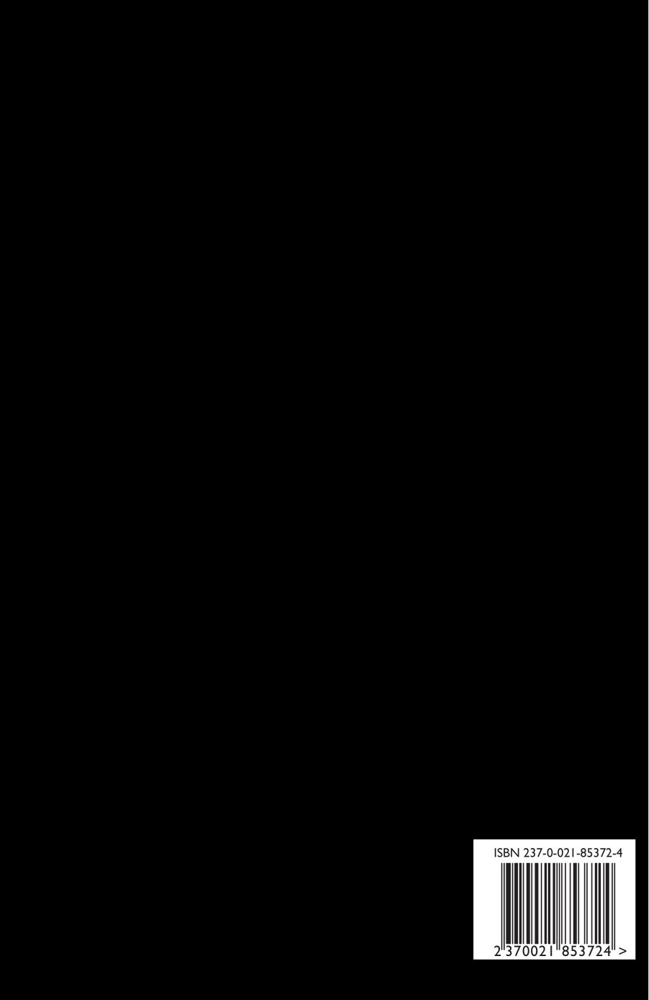

Les Fleurs du Mal (multilingual)
Charles Baudelaire, tr. Patrick Swickard
6"x9" paperback, 494 pages
And you can send me dead flowers every morning
Send me dead flowers by the mail
Send me dead flowers to my wedding
And I won't forget to put roses on your grave
- The Rolling Stones
A new translation of this classic by Baltimore based poet Patrick Swickard. This version features the original French versions side-by-side with the English translations.